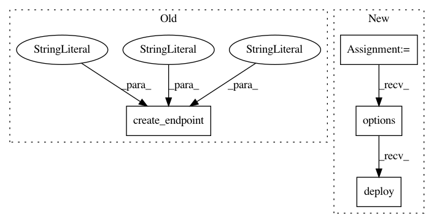

e4ca337e16bf4f0f749161932038665cefe7391e,python/ray/serve/tests/test_failure.py,,test_worker_replica_failure,#Any#,160
Before Change
serve.create_backend("replica_failure", Worker, counter)
serve.update_backend_config(
"replica_failure", BackendConfig(num_replicas=2))
serve.create_endpoint(
"replica_failure", backend="replica_failure", route="/replica_failure")
// Wait until both replicas have been started.
responses = set()
start = time.time()
After Change
return self.index
counter = Counter.remote()
Worker.options(num_replicas=2).deploy(counter)
// Wait until both replicas have been started.
responses = set()
start = time.time()
In pattern: SUPERPATTERN
Frequency: 3
Non-data size: 4
Instances
Project Name: ray-project/ray
Commit Name: e4ca337e16bf4f0f749161932038665cefe7391e
Time: 2021-04-08
Author: ed.nmi.oakes@gmail.com
File Name: python/ray/serve/tests/test_failure.py
Class Name:
Method Name: test_worker_replica_failure
Project Name: ray-project/ray
Commit Name: e4ca337e16bf4f0f749161932038665cefe7391e
Time: 2021-04-08
Author: ed.nmi.oakes@gmail.com
File Name: python/ray/serve/tests/test_failure.py
Class Name:
Method Name: test_controller_failure
Project Name: ray-project/ray
Commit Name: e4ca337e16bf4f0f749161932038665cefe7391e
Time: 2021-04-08
Author: ed.nmi.oakes@gmail.com
File Name: python/ray/serve/tests/test_failure.py
Class Name:
Method Name: test_http_proxy_failure